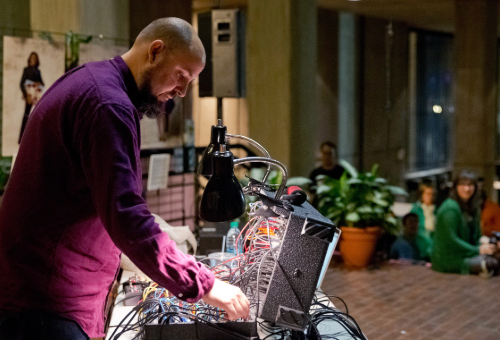

Years Active: 1949-2004
Favorite Recordings: John Coltrane, Live at Birdland; Wayne Shorter, Speak No Evil; Larry Young, Unity.
Legndary Collaborators Include: John Coltrane, Mcoy Tyner, Jimmy Garrison, Wayne Shorter, Joe Henderson, Larry Young
Wiki Page
Over the last 25+ years I've made my living playing the drums and Elvin Jones has been an inspiration since I discovered him on a Wayne Shorter cassette I purchased at Vintage Vinyl in University City, MO as a kid.
I later had the ultimate pleasure of meeting and hanging out with him in New York City in the 1990's. His style of playing was revolutionary within the tradition of jazz drumming and his playing was not fully appreciated until he joined John Coltrane's band in the early 1960's. I admire that he stuck with his approach dispite some intial disapproval and waited until musicians and listeners caught to him.
Years Active: 1943-1987
Favorite Recordings: California Ear Unit..., Morton Feldman: Rothko Chapel, Why Patterns; Turfan Ensemble, Durations I-V; Crossing Lines, Feldman: Bass Clarinet and Percussion
Collaborators & Associates: David Tudor, Cathy Berberian, John Cage, Mark Rothko
Wiki Page
Once you listen to Feldman's music, really listen, you'll never hear music the same. The first peice I ever heard was String Quartet and Piano.
Years Active: 1996-present
Favorite Recordings: Chicago Underground Quartet, Chicago Underground Quartet; Jeff Parker, Slight Freedom; Jeff Partker ETA IVtet, Mondays at The Enfield Tennis Academy; Jeff Parker, The New Breed;
Collaborators: Rob Mazurek, Chad Taylor, Tortois,Makaya McCraven, Jay Bellerose, Anna Butterss, Josh Johnson
Wiki Page
Website
Honest and creative improviser, composer and guitarist based in LA, previously based in Chicago. Disverse and prolific output.
Keith Fullerton Whitman

Years Active: 1999-present
Favorite Recordings: Playthroughs, Multiples, Generators LP, Acid Casualities (L), Acid Casualities (H)
Collaborators: See website.
Wiki Page
Website
Brooklyn based prolific performer and composer of electronic music, using algorithmic and generative systems both on computer and modular synth. Helmed Mimaroglu Music (Sales) from 2003-2015.